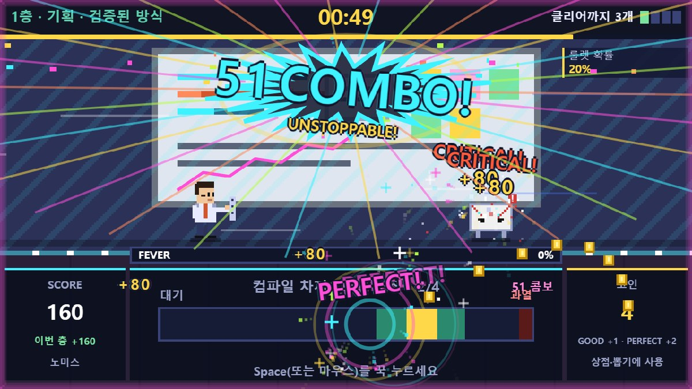
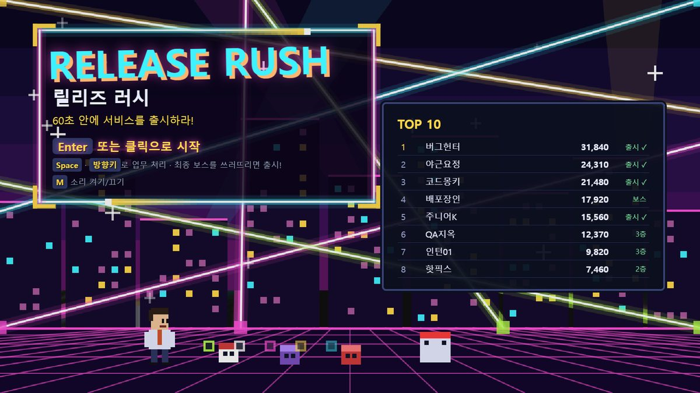
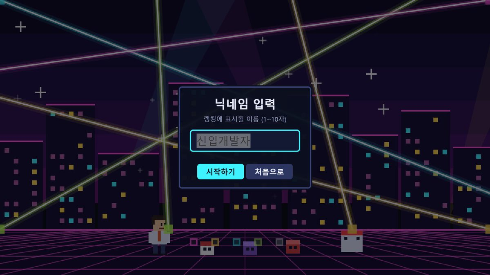
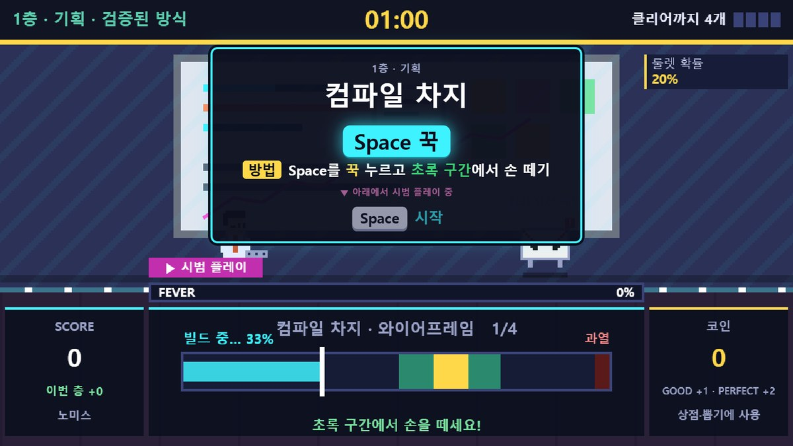
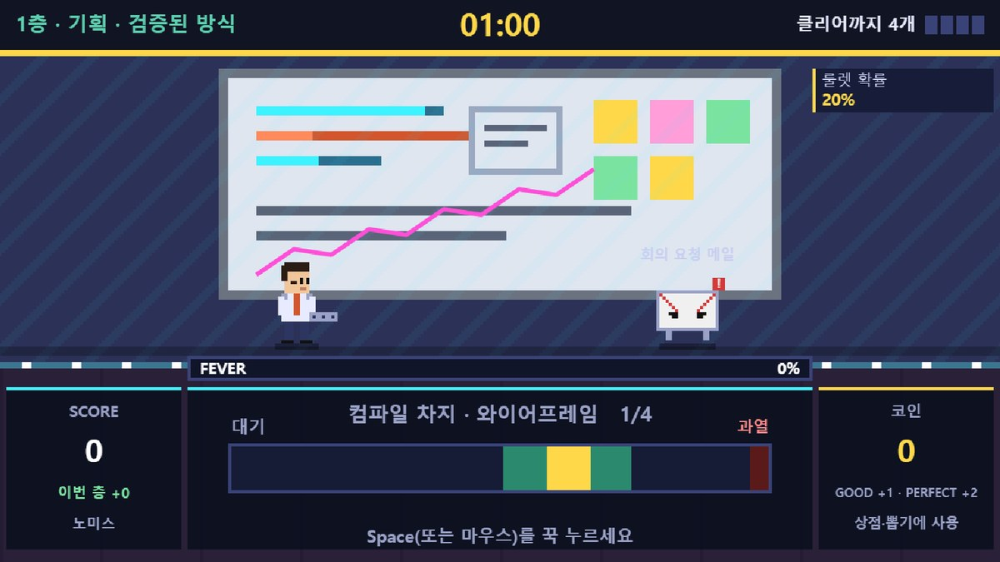
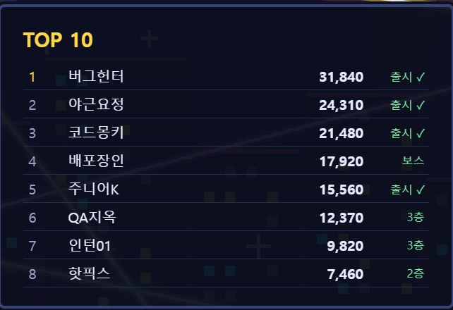
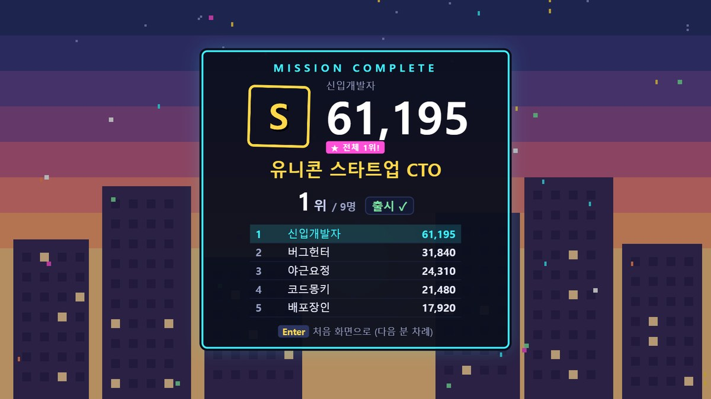

신입 개발자가 되어 업무 몬스터를 쓰러뜨리며 기획 → 개발 → 테스트를 지나 60초 안에 서비스를 출시하는 아케이드 게임입니다. 한 판 약 3분, 쉬지 않고 몰아칩니다.




| 시작 · 다음 | Space Enter (클릭 가능) |
| 고르기 | 1 2 3 또는 ← → + Enter (클릭 가능) |
| 일시정지 · 소리 | Esc 일시정지 · M 소리 켜기/끄기 |
| 배포 타이밍 | Space 초록 구간에서 |
| 커맨드 입력 | ↑ ↓ ← → 순서대로 · 빨간 화살표는 반대 방향 |
| 장애 알림 | Space 초록불에만 · 노란불은 함정 |
| 코드 리뷰 분류 | ← 버그(반려) · → 정상(승인) |
| 컴파일 차지 | Space 꾹 누르기 → 초록 구간에서 떼기 |
| 알림 두더지 | ← ↓ → 알림 칸 · 👑 대표님 메시지는 누르지 않기 |
| 피버 · 그로기 | 미니게임 자리에 피버 패널이 뜨면 아무 키나 연타 (꾹 누르기는 1회) · 끝나면 연타 10회당 +1콤보 · 「다시 시작!」 뒤 미니게임 계속 |
| 상점 | 123 구매 · R 새로고침 · G 뽑기 · Enter 나가기 |
방향키 대신 WASD도 됩니다. 각 미니게임은 시작 전 룰 카드에서 시범 플레이로 보여 줍니다.


| 증상 | 해결 |
|---|---|
| 더블클릭하면 다른 프로그램이 열림 | 파일 오른쪽 클릭 → 연결 프로그램 → Microsoft Edge |
| 소리가 안 남 | 아무 키나 한 번 누르기(브라우저 정책) · M으로 꺼져 있는지 확인 |
| 랭킹이 사라짐 | 처음 연 브라우저 · 같은 파일 위치에서 열기 |
| 화면이 작음 | F11 전체 화면 (16:9 비율 유지) |
| 화면이 붉게 깜빡임 | 정상입니다. 남은 시간 15초 이하(DANGER) · 5초 이하(카운트다운) 연출 |
권장: Windows 10/11 · Microsoft Edge 또는 Chrome · 16:9 화면 · 키보드 | 제작: 1인 · HTML 한 파일(외부 라이브러리 · 음원 · 이미지 파일 없음)